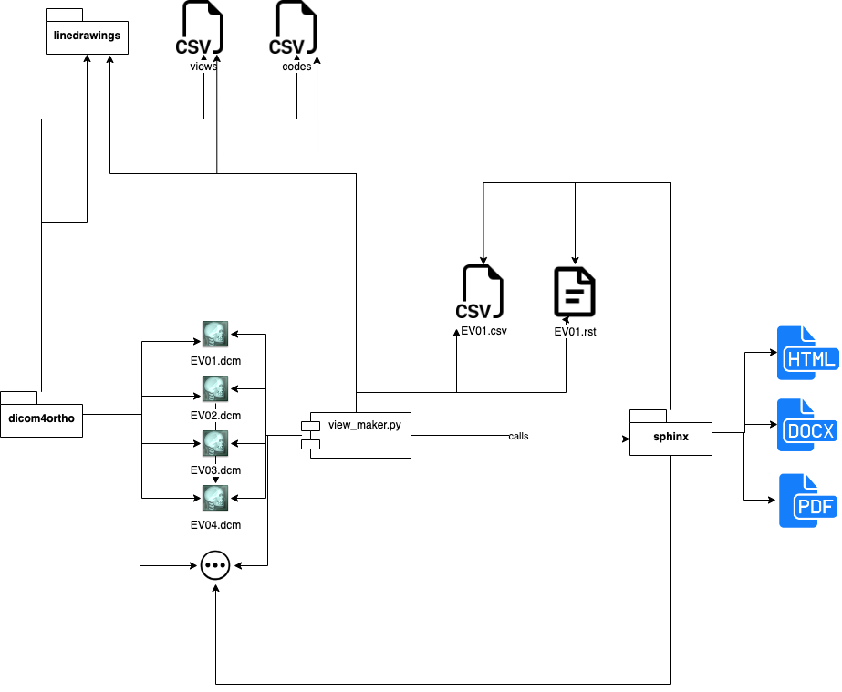

Dental – Technical Framework Supplement – Orthodontic Imaging Profile (OIP) – Trial Implementation#
Executive Summary#
The archival of high quality photographic documentation in a open standard is central to big data research, reduction in errors, data loss, staff and doctor burnout. This standard defines how to save orthodontic medical visible light images (aka photographs) making use of the most widely used standard for medical images: DICOM.
Instructions for providing your comments#
Open the ADA Connect site and go to the WG 11.6 space by clicking on this link. You might need to log into ADA Connect. Use your regular ADA Connect credentials to log in.
Search for whatever you are commenting about: if somebody already left a similar comment to what you were thinking about, add to the existing discussion.
If you don’t find a discussion that is relevant to what you want to comment, you need to create a new Discussion on the ADA Connect site in the WG11.6 space. Pick a subject for your comment and start the subject line with “DENT-OIP: “. This will make it easier for anyone to understand what this discussion is about, since all discussions go in the same folder.
If you have any problems, send an email to Toni Magni afm@case.edu.
Thank you!
How DENT-OIP is built#

Contents#
- Foreword
- Introduction to this Supplement
- Open Issues and Questions
- Closed Issues
- IHE Technical Frameworks General Introduction
- Copyright Licenses
- Trademark
- IHE Technical Frameworks General Introduction Appendices
- Normative References
- Guiding Principles (Informative)
- 3 Orthodontic Imaging (OIP) Profile
- Volume 2 - Transactions
- 1 Introduction to Volume 2
- 2 Conventions
- 3 IHE Dental Transactions
- 7 DICOM Conventions
- 7.2 DICOM Coded Values
- 7.2.1 CID 4028 - Craniofacial Anatomic Region
- 7.2.2 CID 247 - Laterality Left-Right Only
- 7.2.3 CID 244 - Laterality
- 7.2.4 CID 4061 - Head and/or Neck Primary Anatomic Structure
- 7.2.5 Patient Orientation
- 7.2.6 Orthognathic Functional Conditions
- 7.2.7 Orthodontic Finding by Inspection
- 7.2.8 Orthodontic Observable Entity
- 7.2.9 Dental Occlusion
- 7.2.10 Longitudinal Temporal Event Type
- 7.3 IOD Definitions
- 7.3.1 VL Photographic Image IOD Definition
- 7.3.2 Video Photograpic Image IOD Definition
- 7.3.3 Encapsulated 3D Manufacturing Models IODs Definition
- 7.3.4 Surface Scan Mesh IOD Definition
- 7.3.5 Multi-frame True Color Secondary Capture Image IOD Definition
- 7.3.6 Secondary Capture Image IOD Definition
- 7.3.7 Structured Display IOD Definition
- 7.3.8 Hanging Protocol IOD Definition
- 7.4 Module Definitions
- 7.4.1.6 Acquisition Context
- 7.4.1.7 General Image
- 7.4.1.8 Device
- 7.4.1.9 SOP Common
- 7.4.2 VL Photographic Image IOD - Module Constraints
- Appendix A: View Examples
- General notes regarding the examples
- View keywords
- List of view examples
- [EV01] - Right Profile (subject is facing observer’s right) - Lips Relaxed, Centric Occlusion
- [EV02] - Right Profile (subject is facing observer’s right) - Lips Relaxed, Centric Relation
- [EV03] - Right Profile (subject is facing observer’s right) - Lips Closed, Centric Occlusion
- [EV04] - Right Profile (subject is facing observer’s right) - Lips Closed, Centric Relation
- [EV05] - Right profile (subject is facing observer’s right) - Full Smile, Centric Occlusion
- [EV06] - Right Profile (subject is facing observer’s right) - Full Smile, Centric Relation
- [EV07] - Right Profile (subject is facing observer’s right) - Mandible Postured Forward
- [EV08] - 45° Right Profile (subject turns toward observer’s right) - Lips Relaxed, Centric Occlusion
- [EV09] - 45° Right Profile (subject turns toward observer’s right) - Lips Relaxed, Centric Relation
- [EV10] - 45° Right Profile (subject turns toward observer’s right) - Lips Closed, Centric Occlusion
- [EV11] - 45° Right Profile (subject turns toward observer’s right) - Lips Closed, Centric Relation
- [EV12] - 45° Right Profile (subject turns toward observer’s right) - Full Smile, Centric Occlusion
- [EV13] - 45° Right Profile (subject turns toward observer’s right) - Full Smile, Centric Relation
- [EV14] - 45° Right Profile (subject turns toward observer’s right) - Mandible Postured Forward
- [EV15] - Full Face - Lips Relaxed, Centric Occlusion
- [EV16] - Full Face - Lips Relaxed, Centric Relation
- [EV17] - Full Face - Lips Closed, Centric Occlusion
- [EV18] - Full Face - Lips Closed, Centric Relation
- [EV19] - Full Face - Full Smile, Centric Occlusion
- [EV20] - Full Face - Full Smile, Centric Relation
- [EV21] - Full Face - Mandible Postured Forward
- [EV22] - Left Profile (subject is facing observer’s left) - Lips Relaxed, Centric Occlusion
- [EV23] - Left Profile (subject is facing observer’s left) - Lips Relaxed, Centric Relation
- [EV24] - Left Profile (subject is facing observer’s left) - Lips Closed, Centric Occlusion
- [EV25] - Left Profile (subject is facing observer’s left) - Lips Closed, Centric Relation
- [EV26] - Left profile (subject is facing observer’s left) - Full Smile, Centric Occlusion
- [EV27] - Left Profile (subject is facing observer’s left) - Full Smile, Centric Relation
- [EV28] - Left Profile (subject is facing observer’s left) - Mandible Postured Forward
- [EV29] - 45° Left Profile (subject turns toward observer’s left) - Lips Relaxed, Centric Occlusion
- [EV30] - 45° Left Profile (subject turns toward observer’s left) - Lips Relaxed, Centric Relation
- [EV31] - 45° Left Profile (subject turns toward observer’s left) - Lips Closed, Centric Occlusion
- [EV32] - 45° Left Profile (subject turns toward observer’s left) - Lips Closed, Centric Relation
- [EV33] - 45° Left Profile (subject turns toward observer’s left) - Full Smile, Centric Occlusion
- [EV34] - 45° Left Profile (subject turns toward observer’s left) - Full Smile, Centric Relation
- [EV35] - 45° Left Profile (subject turns toward observer’s left- Full Smile, Mandible Postured Forward
- [EV36] - Other Face (head tipped back) - Inferior View (showing lower border of mandible, nares, infraorbital rim contours, forehead contours)
- [EV37] - Other Face (viewed from a bove) - Superior View (showing forehead, infraorbital rim contour, dorsum of nose, upper lip, chin)
- [EV38] - Other Face - Close-Up Smile (with lips)
- [EV39] - Other Face - Occlusal Cant ( e.g., tongue depressor)
- [EV40] - Other Face - Forensic Interest (tattoos, jewelry, scars)
- [EV41] - Other Face - Anomalies (ears, skin tags, etc.)
- [EV42] - Full Face - Mouth Open
- [EV43] - Full Face - demonstrating Nerve Weakness
- [IV01] - Intraoral Right Buccal Segment, Centric Occlusion, Direct View
- [IV02] - Intraoral Right Buccal Segment - Centric Occlusion, With Mirror
- [IV03] - Intraoral Right Buccal Segment - Centric Occlusion, With Mirror But Corrected
- [IV04] - Intraoral Right Buccal Segment - Centric Relation, Without Mirror
- [IV05] - Intraoral Right Buccal Segment - Centric Relation, With Mirror
- [IV06] - Intraoral Right Buccal Segment - Centric Relation, With Mirror But Corrected
- [IV07] - Intraoral Frontal View - Centric Occlusion, Without Mirror
- [IV08] - Intraoral Frontal View - Centric Relation, Without Mirror
- [IV09] - Intraoral Frontal View - Teeth Apart, Without Mirror
- [IV10] - Intraoral Frontal View - Mouth Open, Without Mirror
- [IV11] - Intraoral Frontal View Inferior (showing depth of bite and overjet) - Centric Occlusion, Without Mirror
- [IV12] - Intraoral Frontal View Inferior (showing depth of bite and overjet) - Centric Relation, Without Mirror
- [IV13] - Intraoral Frontal View, showing Tongue Thrust, Without Mirror
- [IV14] - Intraoral Right Lateral View - Centric Occlusion, Showing Overjet, Without Mirror
- [IV15] - Intraoral Right Lateral View - Centric Relation, Showing Overjet, Without Mirror
- [IV16] - Intraoral Left Lateral View - Centric Occlusion, Showing Overjet, Without Mirror
- [IV17] - Intraoral Left Lateral View - Centric Relation, Showing Overjet, Without Mirror
- [IV18] - Intraoral Left Buccal Segment - Centric Occlusion, Without Mirror
- [IV19] - Intraoral Left Buccal Segment - Centric Occlusion, With Mirror
- [IV20] - Intraoral Left Buccal Segment - Centric Occlusion, With Mirror But Corrected
- [IV21] - Intraoral Left Buccal Segment - Centric Relation, Without Mirror
- [IV22] - Intraoral Left Buccal Segment - Centric Relation, With Mirror
- [IV23] - Intraoral Left Buccal Segment - Centric Relation, With Mirror But Corrected
- [IV24] - Intraoral Maxillary Occlusal View - Mouth Open, With Mirror
- [IV25] - Intraoral Maxillary Occlusal View - Mouth Open, With Mirror But Corrected
- [IV26] - Intraoral Mandibular Occlusal View - Mouth Open, With Mirror
- [IV27] - Intraoral Mandibular Occlusal View - Mouth Open, With Mirror But Corrected
- [IV28] - Intraoral - showing Gingival Recession (ISO tooth numbers)
- [IV29] - Intraoral - showing Frenum (ISO tooth numbers)
- [IV30] - Intraoral - any photo using a photo accessory device such as a contraster to provide a solid background or black mirror ([modifier] is any set of IO modifier as specified above)
- Appendix B: ViewSet Examples
- Appendix C: Device Examples (Informative)
- Appendix D: Definitions (Informative)
- Appendix E: SNOMED Codes
- Bibliography